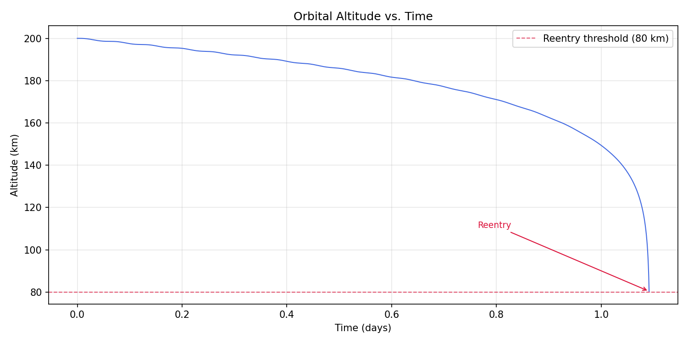
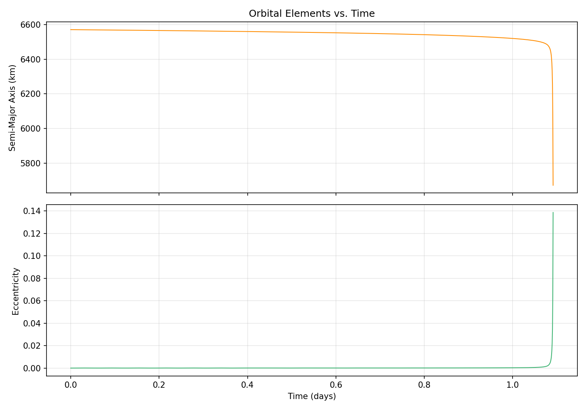
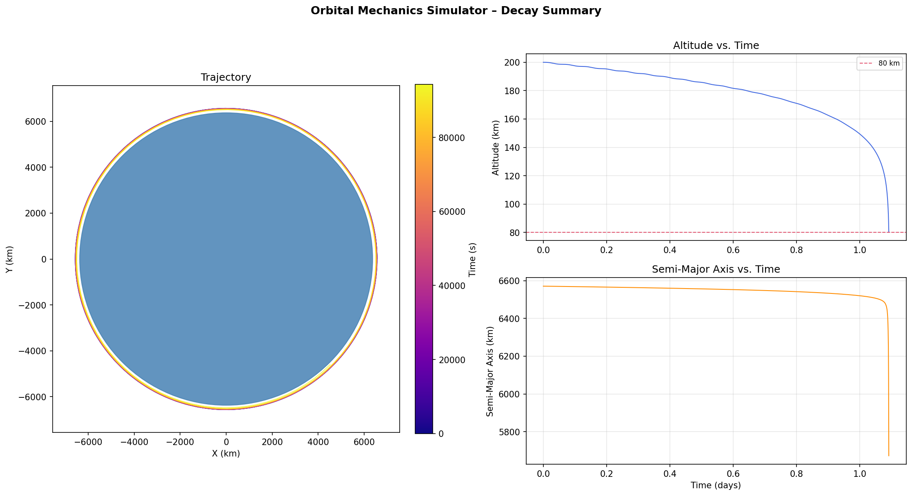
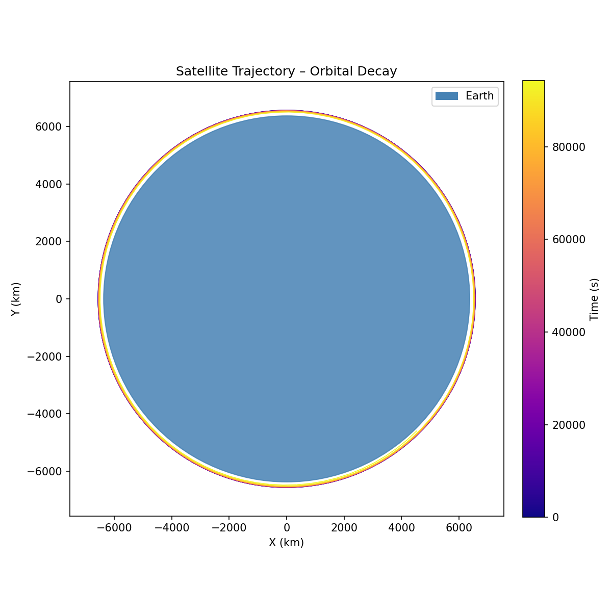
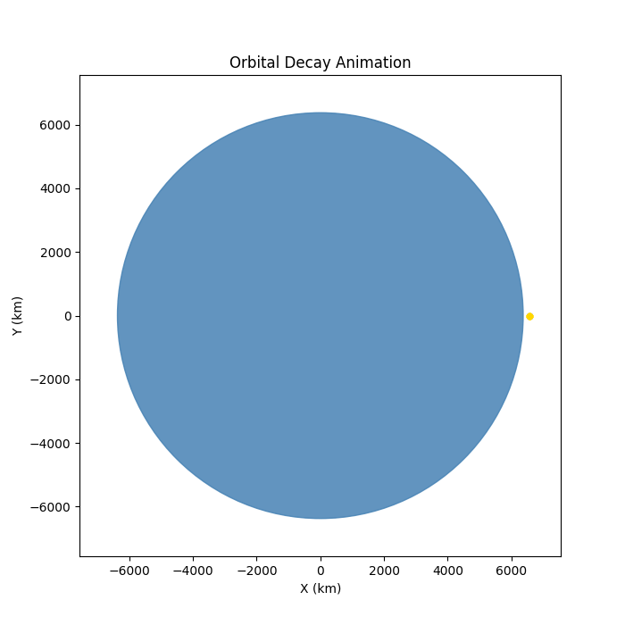

Orbital Mechanics · Python
Orbital Decay
Simulator
Overview
A Python-based numerical propagator that models the orbital decay of low-Earth-orbit (LEO) satellites under realistic perturbation forces. The simulator integrates the equations of motion using a Runge-Kutta 4/5 scheme and outputs orbital element evolution, ground track, altitude decay curves, and re-entry predictions.
Objectives
- Model the coupled effects of atmospheric drag and J2 oblateness perturbation on LEO satellite trajectories over multi-week simulation windows.
- Predict re-entry timing and ground track corridor for decaying orbits based on initial conditions and ballistic coefficient.
- Build a modular, reusable propagation framework that separates physics, integration, coordinate transforms, and visualization into independent modules.
My Contributions
- Designed and built the full simulator from scratch — physics models, integrator, coordinate transform pipeline, and all visualizations.
- Implemented the exponential atmosphere drag model with configurable ballistic coefficient and the J2 oblateness perturbation analytically.
- Wrote the Runge-Kutta 4/5 integrator and the orbital element ↔ Cartesian state vector conversion routines.
- Generated animated GIF outputs of orbital decay, ground track evolution, and altitude vs. time plots.
Methods / Approach
The propagator converts initial Keplerian orbital elements to a Cartesian state vector, then numerically integrates the equations of motion forward in time using a 4th/5th-order Runge-Kutta scheme. At each timestep, three force contributions are summed: the two-body gravitational term, the J2 oblateness acceleration, and the atmospheric drag force computed from an exponential density model. State vectors are converted back to orbital elements at each output step for element tracking. Re-entry is detected when perigee altitude drops below a configurable threshold.
The codebase is structured as a modular Python package with separate modules for physics forces, numerical integration, coordinate transforms, configuration, and visualization, keeping each concern isolated and independently testable.
Results





- Produced altitude decay, RAAN drift, and perigee lowering curves over multi-week simulation windows.
- Generated animated ground track and altitude-decay GIF outputs for visualization.
- Modular architecture allows swapping atmosphere models or adding new perturbation forces without touching the integrator.
Challenges and How I Solved Them
Coordinate frame consistency. Mixing ECI, ECEF, and geographic frames without a disciplined conversion pipeline produces subtle, hard-to-catch errors in drag direction and ground track output. I solved this by isolating all frame transforms into a single coordinate module with clearly documented input/output conventions, and cross-checked outputs against known ISS orbital parameters.
Integration stability at low altitude. As perigee drops below ~200 km, atmospheric density rises sharply and drag acceleration spikes, causing fixed-step integrators to blow up. I addressed this by tightening the RK4/5 step size adaptively near re-entry and adding a perigee detection flag to terminate propagation cleanly rather than letting the integrator diverge.
What I Learned
- How J2 and atmospheric drag couple to drive secular drift in RAAN and argument of perigee — not just altitude decay.
- The practical challenges of coordinate frame management in astrodynamics and why disciplined transform pipelines matter.
- How sensitive re-entry timing is to atmospheric density uncertainty — small changes in the model produce large shifts in predicted re-entry window.
Tools and Technologies
- Python — core language
- NumPy — vector math and state vector operations
- SciPy — numerical integration (RK4/5)
- Matplotlib — plots, 3D trajectory visualization, and animated GIF output
- Git / GitHub — version control